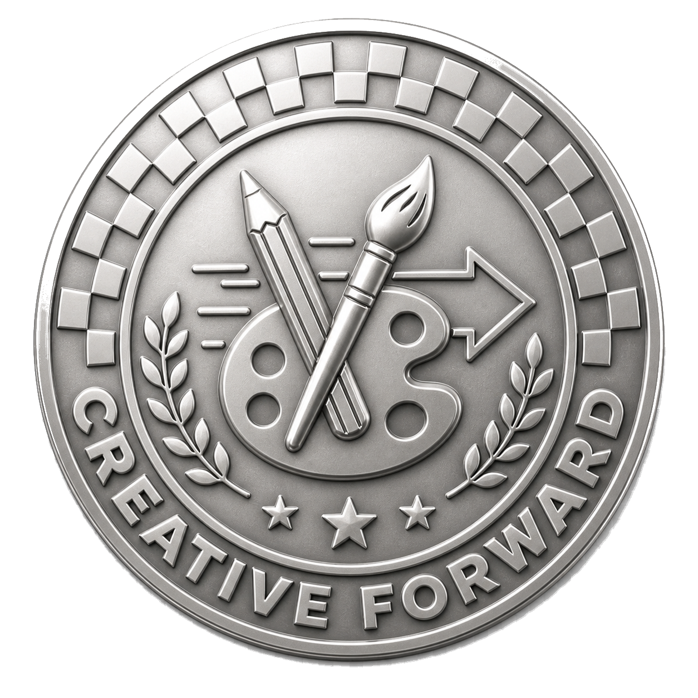
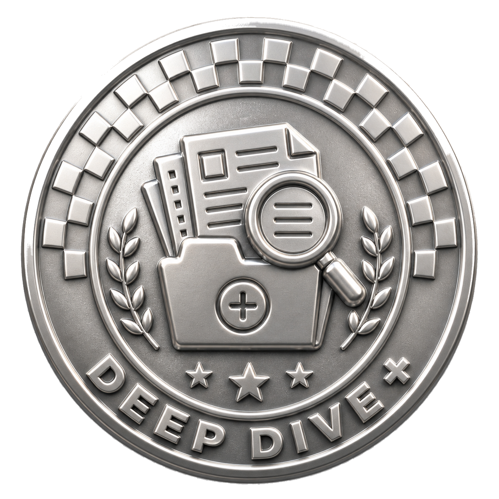
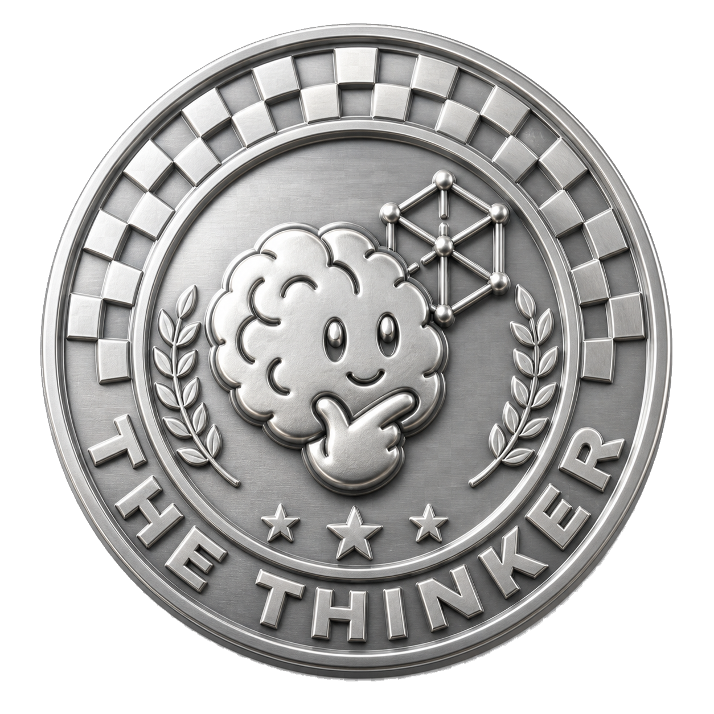
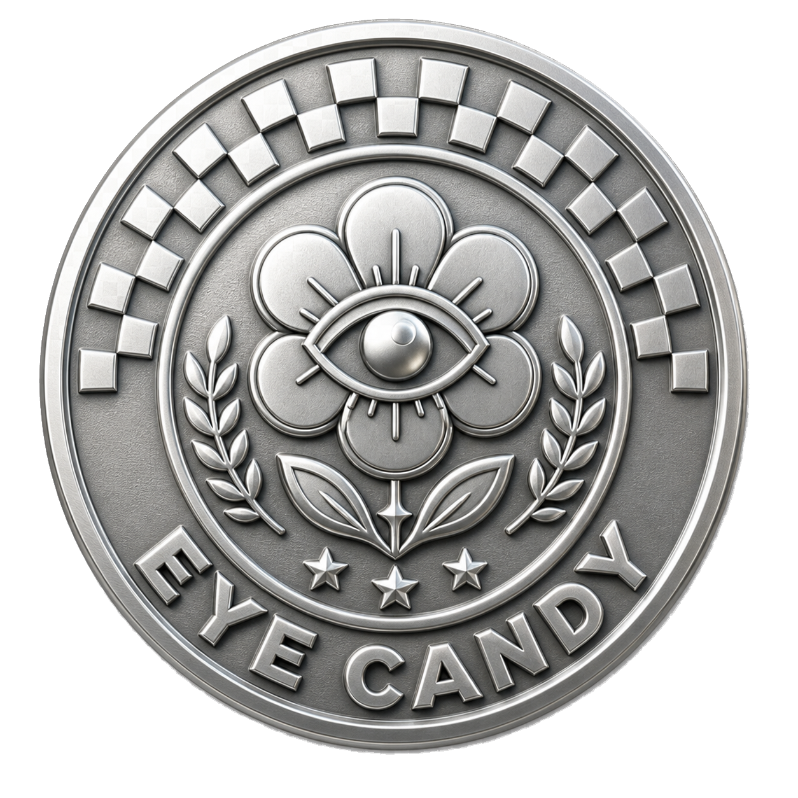

Creative Forward
Más alma, pasión y visión genuina. Se entrega por avance a quien lo merezca.
| Pos | Equipo | Badges A01 | Badges A02 | Total |
|---|---|---|---|---|
| 01 | G03 — Banana USA | 🔍 Deep Dive · 3 🌸 Eye Candy · 2 | 🎨 Creative Forward · 3 | 8 |
| 01 | G01 — Banana Tim | 🎨 Creative Forward · 3 | 🔍 Deep Dive · 3 🌸 Eye Candy · 2 | 8 |
| 03 | G02 — Banana Retainer | 📁 Paper Trail · 3 | 🧠 The Thinker · 3 | 6 |
| 03 | G04 — Banana Academy | 🧠 The Thinker · 3 | 📁 Paper Trail · 3 | 6 |

Más alma, pasión y visión genuina. Se entrega por avance a quien lo merezca.

Investigación más profunda, respaldada por data. Se entrega por avance a quien lo merezca.

Mejor razonamiento y conceptualización aterrizada. Se entrega por avance a quien lo merezca.
Mejor documentación: time logs, prompts, decisiones. Se entrega por avance a quien lo merezca.

Mejor estética visual. Se entrega por avance a quien lo merezca.
Lo que entregaron tiene alma. Se nota intención detrás de la propuesta y eso es exactamente lo que Banana necesita ver en un proyecto propio. La dirección creativa como modelo — Banana como capa de curaduría y garantía de marca, con talento externo que ejecuta — es una idea que resuelve el problema real: cómo bajar la barrera de entrada sin bajar el estándar.
Lo que vino después: el concepto estaba ahí, pero tenía que volverse producto. ¿Cómo se llama ese modelo? ¿Cómo se vende? ¿Qué incluye exactamente cada paquete?
La documentación de este equipo es el estándar que todos deberían seguir. Notion estructurado, escalable, con registro de investigación claro. Eso no es un detalle menor — es lo que separa un proceso profesional de un ejercicio.
Lo que vino después: faltaba razonamiento propio. ¿Qué hace que el retainer de Banana sea diferente a cualquier otro?
Dos badges en un avance — bien ganados. Mercado de $17,000M, 9.9% de crecimiento, cuadrante competitivo con espacio real para Banana. Y la presentación más cuidada visualmente. El concepto "full creative label" fue el highlight de la sesión.
Lo que vino después: los benchmarks tenían que ir más lejos y necesitaban Notion formal.
Mapa de carrera con gamificación — badges, niveles Junior/Semi Senior/Lead — que demuestra que pensaron en el sistema completo, no solo en la idea superficial.
Lo que vino después: una propuesta de formación sin ejecución detrás es un PDF bonito. Tenían que mostrar algo funcionando.
El salto más notable entre avances. Dos fuentes de ingreso, tres tiers, pricing inteligente, proyección financiera y Claude integrado en el flujo operativo. Llegaron con las piezas correctas sobre la mesa — y encima, construyeron hasta un personaje y una identidad. Eso no es output de Claude, es criterio propio.
El último empujón: las decisiones pendientes tienen que cerrarse. Nombre, política de revisiones, governance de calidad. Un modelo que deja preguntas abiertas en la presentación final le da munición al jurado para desmontarlo.
El razonamiento está sólido. Los perfiles de cliente son los mejores del grupo — la tabla de "a quién no" en particular es un activo que Banana puede usar hoy. Tienen lógica real detrás de cada decisión.
El último empujón: editar con criterio. Todo ese razonamiento tiene que caber en una propuesta que se entienda en 30 segundos. ¿Cuáles son los 3 planes? ¿Qué incluye? ¿Cuánto cuesta? Si no se entiende al abrir el sitio, no existe.
Buyers con nombre y ticket, tabla de precios VEN vs USA lista para usar, playbook de tres fases con herramientas reales. La investigación de Ochodias y Capitolio como prueba de concepto venezolana fue una decisión inteligente que nadie más tomó.
El último empujón: tienen la estrategia. Necesitan el momento que la ancle — algo tan memorable como el cuadrante competitivo del Avance 01. Ya está en lo que investigaron. Encuéntrenlo.
La encuesta interna fue el mejor movimiento de este avance en todo el grupo. 100% quiere el espacio, 8.4/10 de importancia. Convierte el concepto en una necesidad documentada. Los casos de Deloitte, SAP y Salesforce son sólidos. Se nota que este equipo cree en lo que está construyendo.
El último empujón: muestren que ya empezó. El Welcome Kit, el primer Fresh Friday, el bot de Claude para onboarding. Un dato de impacto real pesa más que diez slides de casos externos.
Usar Claude Cowork para resolver un problema real de Banana. No es un ejercicio — es un proyecto completo e implementable.
$250 por persona del equipo ganador.
No más investigar. No más bajar info. Entrega final 15 jun · Presentación 19 jun. Stay sharp.